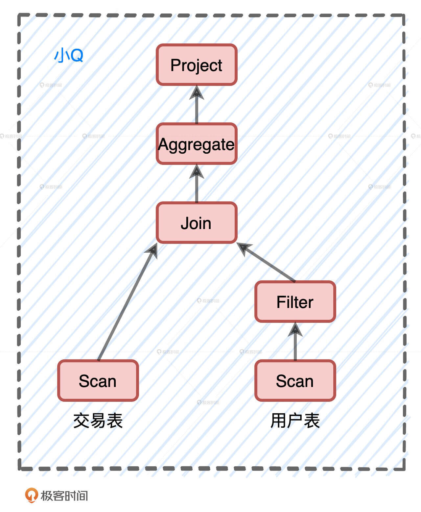
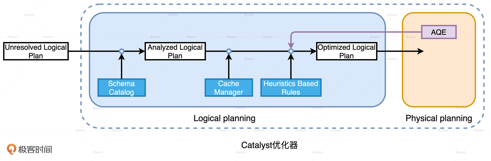
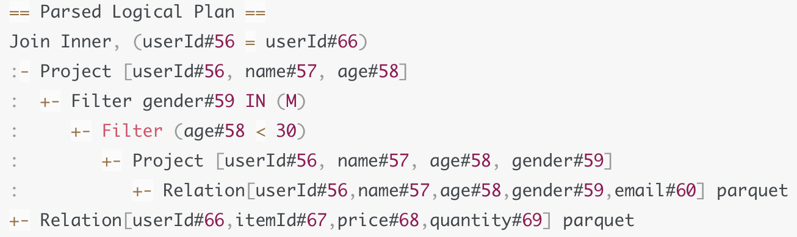
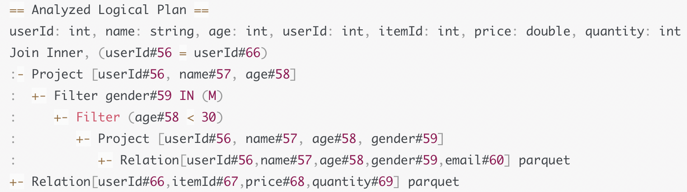
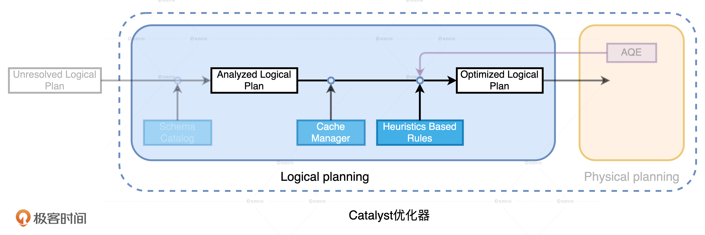
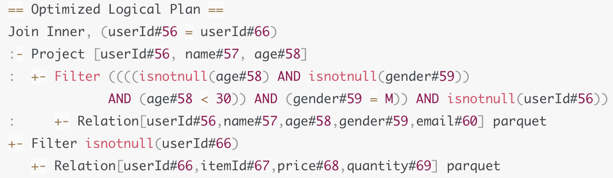
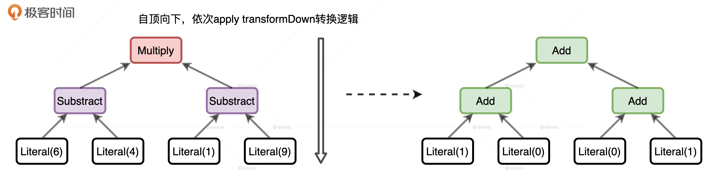

- 00 开篇词 Spark性能调优，你该掌握这些“套路”.md.html
- 01 性能调优的必要性：Spark本身就很快，为啥还需要我调优？.md.html
- 02 性能调优的本质：调优的手段五花八门，该从哪里入手？.md.html
- 03 RDD：为什么你必须要理解弹性分布式数据集？.md.html
- 04 DAG与流水线：到底啥叫“内存计算”？.md.html
- 05 调度系统：“数据不动代码动”到底是什么意思？.md.html
- 06 存储系统：空间换时间，还是时间换空间？.md.html
- 07 内存管理基础：Spark如何高效利用有限的内存空间？.md.html
- 08 应用开发三原则：如何拓展自己的开发边界？.md.html
- 09 调优一筹莫展，配置项速查手册让你事半功倍！（上）.md.html
- 10 调优一筹莫展，配置项速查手册让你事半功倍！（下）.md.html
- 11 为什么说Shuffle是一时无两的性能杀手？.md.html
- 12 广播变量（一）：克制Shuffle，如何一招制胜！.md.html
- 13 广播变量（二）：如何让Spark SQL选择Broadcast Joins？.md.html
- 14 CPU视角：如何高效地利用CPU？.md.html
- 15 内存视角（一）：如何最大化内存的使用效率？.md.html
- 16 内存视角（二）：如何有效避免Cache滥用？.md.html
- 17 内存视角（三）：OOM都是谁的锅？怎么破？.md.html
- 18 磁盘视角：如果内存无限大，磁盘还有用武之地吗？.md.html
- 19 网络视角：如何有效降低网络开销？.md.html
- 20 RDD和DataFrame：既生瑜，何生亮？.md.html
- 21 Catalyst逻辑计划：你的SQL语句是怎么被优化的？（上）.md.html
- 22 Catalyst物理计划：你的SQL语句是怎么被优化的（下）？.md.html
- 23 钨丝计划：Tungsten给开发者带来了哪些福报？.md.html
- 24 Spark 3.0（一）：AQE的3个特性怎么才能用好？.md.html
- 25 Spark 3.0（二）：DPP特性该怎么用？.md.html
- 26 Join Hints指南：不同场景下，如何选择Join策略？.md.html
- 27 大表Join小表：广播变量容不下小表怎么办？.md.html
- 28 大表Join大表（一）：什么是“分而治之”的调优思路？.md.html
- 29 大表Join大表（二）：什么是负隅顽抗的调优思路？.md.html
- 30 应用开发：北京市小客车（汽油车）摇号趋势分析.md.html
- 31 性能调优：手把手带你提升应用的执行性能.md.html
- Spark UI（上）深入解读Spark作业的“体检报告”.md.html
- Spark UI（下）：深入解读Spark作业的“体检报告”.md.html
- 期末考试 “Spark性能调优”100分试卷等你来挑战！.md.html
- 结束语 在时间面前，做一个笃定学习的人.md.html
- 捐赠
21 Catalyst逻辑计划：你的SQL语句是怎么被优化的？（上）
你好，我是吴磊。
上一讲我们说，Spark SQL已经取代Spark Core成为了新一代的内核优化引擎，所有Spark子框架都能共享Spark SQL带来的性能红利，所以在Spark历次发布的新版本中，Spark SQL占比最大。因此，Spark SQL的优化过程是我们必须要掌握的。
Spark SQL端到端的完整优化流程主要包括两个阶段：Catalyst优化器和Tungsten。其中，Catalyst优化器又包含逻辑优化和物理优化两个阶段。为了把开发者的查询优化到极致，整个优化过程的运作机制设计得都很精密，因此我会用三讲的时间带你详细探讨。
下图就是这个过程的完整图示，你可以先通过它对优化流程有一个整体的认知。然后随着我的讲解，逐渐去夯实其中的关键环节、重要步骤和核心知识点，在深入局部优化细节的同时，把握全局优化流程，做到既见树木、也见森林。

今天这一讲，我们先来说说Catalyst优化器逻辑优化阶段的工作原理。
案例：小Q变身记
我们先来看一个例子，例子来自电子商务场景，业务需求很简单：给定交易事实表transactions和用户维度表users，统计不同用户的交易额，数据源以Parquet的格式存储在分布式文件系统。因此，我们要先用Parquet API读取源文件。
val userFile: String = _
val usersDf = spark.read.parquet(userFile)
usersDf.printSchema
/**
root
|-- userId: integer (nullable = true)
|-- name: string (nullable = true)
|-- age: integer (nullable = true)
|-- gender: string (nullable = true)
|-- email: string (nullable = true)
*/
val users = usersDf
.select("name", "age", "userId")
.filter($"age" < 30)
.filter($"gender".isin("M"))
val txFile: String = _
val txDf = spark.read.parquet(txFile)
txDf.printSchema
/**
root
|-- itemId: integer (nullable = true)
|-- userId: integer (nullable = true)
|-- price: float (nullable = true)
|-- quantity: integer (nullable = true)
*/
val result = txDF.select("price", "volume", "userId")
.join(users, Seq("userId"), "inner")
.groupBy(col("name"), col("age")).agg(sum(col("price") * col("volume")).alias("revenue"))
result.write.parquet("_")
代码示例如上图所示，为了实现业务逻辑，我们对过滤之后的用户表与交易表做内关联，然后再按照用户分组去计算交易额。不难发现，这个计算逻辑实际上就是星型数仓中典型的关联查询。为了叙述方便，我们给这个关联查询起个名字：小Q。小Q的计算需要两个输入源，一个是交易表，另一个是过滤之后的用户表。今天这一讲，我们就去追随小Q，看看它在Catalyst的逻辑优化阶段都会发生哪些变化。

Catalyst逻辑优化阶段分为两个环节：逻辑计划解析和逻辑计划优化。在逻辑计划解析中，Catalyst把“Unresolved Logical Plan”转换为“Analyzed Logical Plan”；在逻辑计划优化中，Catalyst基于一些既定的启发式规则（Heuristics Based Rules），把“Analyzed Logical Plan”转换为“Optimized Logical Plan”。

因为“Unresolved Logical Plan”是Catalyst优化的起点，所以在进入Catalyst优化器之前，小Q先是改头换面，从代码中的查询语句，摇身变成了“Unresolved Logical Plan”。

逻辑计划解析
小Q成功进入Catalyst优化器之后，就要开始执行逻辑计划解析，也就是要从“Unresolved Logical Plan”转换为“Analyzed Logical Plan”。那么，具体该怎么做呢？
从“小Q启程”那张图我们不难发现，“Unresolved Logical Plan”携带的信息相当有限，它只包含查询语句从DSL语法变换成AST语法树的信息。需要说明的是，不论是逻辑计划还是物理计划，执行的次序都是自下向上。因此，图中逻辑计划的计算顺序是从全表扫描到按性别过滤，每个步骤的含义都是准备“做什么”。
例如，在计划的最底层，Relation节点“告诉”Catalyst：“你需要扫描一张表，这张表有4个字段，分别是ABCD，文件格式是Parquet”。但这些信息对于小Q的优化还远远不够，我们还需要知道这张表的Schema是啥？字段的类型都是什么？字段名是否真实存在？数据表中的字段名与计划中的字段名是一致的吗？
因此，在逻辑计划解析环节，Catalyst就是要结合DataFrame的Schema信息，来确认计划中的表名、字段名、字段类型与实际数据是否一致。完成确认之后，Catalyst会生成“Analyzed Logical Plan”。这个时候，小Q就会从“Unresolved Logical Plan”转换成“Analyzed Logical Plan”。
从下图中我们能够看到，逻辑计划已经完成了一致性检查，并且可以识别两张表的字段类型，比如userId的类型是int，price字段的类型是double等等。

逻辑计划优化
对于现在的小Q来说，如果我们不做任何优化，直接把它转换为物理计划也可以。但是，这种照搬开发者的计算步骤去制定物理计划的方式，它的执行效率往往不是最优的。
为什么这么说呢？在运行时，Spark会先全量扫描Parquet格式的用户表，然后遴选出userId、name、age、gender四个字段，接着分别按照年龄和性别对数据进行过滤。
对于这样的执行计划来说，最开始的全量扫描显然是一种浪费。原因主要有两方面：一方面，查询实际上只涉及4个字段，并不需要email这一列数据；另一方面，字段age和gender上带有过滤条件，我们完全可以利用这些过滤条件减少需要扫描的数据量。
由此可见，对于同样一种计算逻辑，实现方式可以有多种，按照不同的顺序对算子做排列组合，我们就可以演化出不同的实现方式。最好的方式是，我们遵循“能省则省、能拖则拖”的开发原则，去选择所有实现方式中最优的那个。
同样，在面对这种“选择题”的时候，Catalyst也有一套自己的“原则”和逻辑。因此，生成“Analyzed Logical Plan”之后，Catalyst并不会止步于此，它会基于一套启发式的规则，把“Analyzed Logical Plan”转换为“Optimized Logical Plan”。

那么问题来了，Catalyst都有哪些既定的规则和逻辑呢？基于这些规则，Catalyst又是怎么做转换的呢？别着急，我们一个一个来解答，咱们先来说说Catalyst的优化规则，然后再去探讨逻辑计划的转换过程。
Catalyst的优化规则
和Catalyst相比，咱们总结出的开发原则简直就是小巫见大巫，为什么这么说呢？在新发布的Spark 3.0版本中，Catalyst总共有81条优化规则（Rules），这81条规则会分成27组（Batches），其中有些规则会被收纳到多个分组里。因此，如果不考虑规则的重复性，27组算下来总共会有129个优化规则。
对于如此多的优化规则，我们该怎么学呢？实际上，如果从优化效果的角度出发，这些规则可以归纳到以下3个范畴：
- 谓词下推（Predicate Pushdown）
- 列剪裁（Column Pruning）
- 常量替换 （Constant Folding）
首先，我们来说说谓词下推谓词下推主要是围绕着查询中的过滤条件做文章。其中，“谓词”指代的是像用户表上“age < 30”这样的过滤条件，“下推”指代的是把这些谓词沿着执行计划向下，推到离数据源最近的地方，从而在源头就减少数据扫描量。换句话说，让这些谓词越接近数据源越好。
不过，在下推之前，Catalyst还会先对谓词本身做一些优化，比如像OptimizeIn规则，它会把“gender in ‘M’”优化成“gender = ‘M’”，也就是把谓词in替换成等值谓词。再比如，CombineFilters规则，它会把“age < 30”和“gender = ‘M’”这两个谓词，捏合成一个谓词：“age != null AND gender != null AND age <30 AND gender = ‘M’”。
完成谓词本身的优化之后，Catalyst再用PushDownPredicte优化规则，把谓词推到逻辑计划树最下面的数据源上。对于Parquet、ORC这类存储格式，结合文件注脚（Footer）中的统计信息，下推的谓词能够大幅减少数据扫描量，降低磁盘I/O开销。
再来说说列剪裁。列剪裁就是扫描数据源的时候，只读取那些与查询相关的字段。以小Q为例，用户表的Schema是（userId、name、age、gender、email），但是查询中压根就没有出现过email的引用，因此，Catalyst会使用 ColumnPruning规则，把email这一列“剪掉”。经过这一步优化，Spark在读取Parquet文件的时候就会跳过email这一列，从而节省I/O开销。
不难发现，谓词下推与列剪裁的优化动机，其实和“能省则省”的原则一样。核心思想都是用尽一切办法，减少需要扫描和处理的数据量，降低后续计算的负载。
最后一类优化是常量替换，它的逻辑比较简单。假设我们在年龄上加的过滤条件是“age < 12 + 18”，Catalyst会使用ConstantFolding规则，自动帮我们把条件变成“age < 30”。再比如，我们在select语句中，掺杂了一些常量表达式，Catalyst也会自动地用表达式的结果进行替换。
到此为止，咱们从功用和效果的角度，探讨了Catalyst逻辑优化规则的3大范畴。你可能说：“拢共就做了这么3件事，至于兴师动众地制定81条规则吗？”我们划分这3大范畴，主要是为了叙述和理解上的方便。实际上，对于开发者写出的五花八门、千奇百怪的查询语句，正是因为Catalyst不断丰富的优化规则，才让这些查询都能够享有不错的执行性能。如果没有这些优化规则的帮忙，小Q的执行性能一定会惨不忍睹。
最终，被Catalyst优化过后的小Q，就从“Analyzed Logical Plan”转换为“Optimized Logical Plan”，如下图所示。我们可以看到，谓词下推和列剪裁都体现到了Optimized Logical Plan中。

Catalys的优化过程
接下来，我继续来回答刚刚提出的第二个问题：基于这么多优化规则，Catalyst具体是怎么把“Analyzed Logical Plan”转换成“Optimized Logical Plan”的呢？其实，不管是逻辑计划（Logical Plan）还是物理计划（Physical Plan），它们都继承自QueryPlan。
QueryPlan的父类是TreeNode，TreeNode就是语法树中对于节点的抽象。TreeNode有一个名叫children的字段，类型是Seq[TreeNode]，利用TreeNode类型，Catalyst可以很容易地构建一个树结构。
除了children字段，TreeNode还定义了很多高阶函数，其中最值得关注的是一个叫做transformDown的方法。transformDown的形参，正是Catalyst定义的各种优化规则，方法的返回类型还是TreeNode。另外，transformDown是个递归函数，参数的优化规则会先作用（Apply）于当前节点，然后依次作用到children中的子节点，直到整棵树的叶子节点。
总的来说，从“Analyzed Logical Plan”到“Optimized Logical Plan”的转换，就是从一个TreeNode生成另一个TreeNode的过程。Analyzed Logical Plan的根节点，通过调用transformDown方法，不停地把各种优化规则作用到整棵树，直到把所有27组规则尝试完毕，且树结构不再发生变化为止。这个时候，生成的TreeNode就是Optimized Logical Plan。
为了把复杂问题简单化，我们使用Expression，也就是表达式来解释一下这个过程。因为Expression本身也继承自TreeNode，所以明白了这个例子，TreeNode之间的转换我们也就清楚了。
//Expression的转换
import org.apache.spark.sql.catalyst.expressions._
val myExpr: Expression = Multiply(Subtract(Literal(6), Literal(4)), Subtract(Literal(1), Literal(9)))
val transformed: Expression = myExpr transformDown {
case BinaryOperator(l, r) => Add(l, r)
case IntegerLiteral(i) if i > 5 => Literal(1)
case IntegerLiteral(i) if i < 5 => Literal(0)
}
首先，我们定义了一个表达式：（（6 - 4）*（1 - 9）），然后我们调用这个表达式的transformDown高阶函数。在高阶函数中，我们提供了一个用case定义的匿名函数。显然，这是一个偏函数（Partial Functions），你可以把这个匿名函数理解成“自定义的优化规则”。在这个优化规则中，我们仅考虑3种情况：
- 对于所有的二元操作符，我们都把它转化成加法操作
- 对于所有大于5的数字，我们都把它变成1
- 对于所有小于5的数字，我们都把它变成0
虽然我们的优化规则没有任何实质性的意义，仅仅是一种转换规则而已，但是这并不妨碍你去理解Catalyst中TreeNode之间的转换。当我们把这个规则应用到表达式（（6 - 4）*（1 - 9））之后，得到的结果是另外一个表达式（（1 + 0）+（0 + 1）），下面的示意图直观地展示了这个过程。

从“Analyzed Logical Plan”到“Optimized Logical Plan”的转换，与示例中表达式的转换过程如出一辙。最主要的区别在于，Catalyst的优化规则要复杂、精密得多。
Cache Manager优化
从“Analyzed Logical Plan”到“Optimized Logical Plan”的转换，Catalyst除了使用启发式的规则以外，还会利用Cache Manager做进一步的优化。
这里的Cache指的就是我们常说的分布式数据缓存。想要对数据进行缓存，你可以调用DataFrame的.cache或.persist，或是在SQL语句中使用“cache table”关键字。
Cache Manager其实很简单，它的主要职责是维护与缓存有关的信息。具体来说，Cache Manager维护了一个Mapping映射字典，字典的Key是逻辑计划，Value是对应的Cache元信息。
当Catalyst尝试对逻辑计划做优化时，会先尝试对Cache Manager查找，看看当前的逻辑计划或是逻辑计划分支，是否已经被记录在Cache Manager的字典里。如果在字典中可以查到当前计划或是分支，Catalyst就用InMemoryRelation节点来替换整个计划或是计划的一部分，从而充分利用已有的缓存数据做优化。
小结
今天这一讲，我们主要探讨了Catalyst优化器的逻辑优化阶段。这个阶段包含两个环节：逻辑计划解析和逻辑计划优化。
在逻辑计划解析环节，Catalyst结合Schema信息，对于仅仅记录语句字符串的Unresolved Logical Plan，验证表名、字段名与实际数据的一致性。解析后的执行计划称为Analyzed Logical Plan。
在逻辑计划优化环节，Catalyst会同时利用3方面的力量优化Analyzed Logical Plan，分别是AQE、Cache Manager和启发式的规则。它们当中，Catalyst最倚重的是启发式的规则。
尽管启发式的规则多达81项，但我们把它们归纳为3大范畴：谓词下推、列剪裁和常量替换。我们要重点掌握谓词下推和列剪裁，它们的优化动机和“能省则省”的开发原则一样，核心思想都是用尽一切办法，减少需要扫描和处理的数据量，降低后续计算的负载。
针对所有的优化规则，Catalyst优化器会通过调用TreeNode中的transformDown高阶函数，分别把它们作用到逻辑计划的每一个节点上，直到逻辑计划的结构不再改变为止，这个时候生成的逻辑计划就是Optimized Logical Plan。
最后，Cache Manager的作用是提供逻辑计划与数据缓存的映射关系，当现有逻辑计划或是分支出现在Cache Manager维护的映射字典的时候，Catalyst可以充分利用已有的缓存数据来优化。
每日一练
- 既然Catalyst在逻辑优化阶段有81条优化规则，我们还需要遵循“能省则省、能拖则拖”的开发原则吗？
- 你能说说Spark为什么用偏函数，而不是普通函数来定义Catalyst的优化规则吗？
期待在留言区看到你的思考和答案，我们下一讲见！
© 2019 - 2023 Liangliang Lee. Powered by gin and hexo-theme-book.